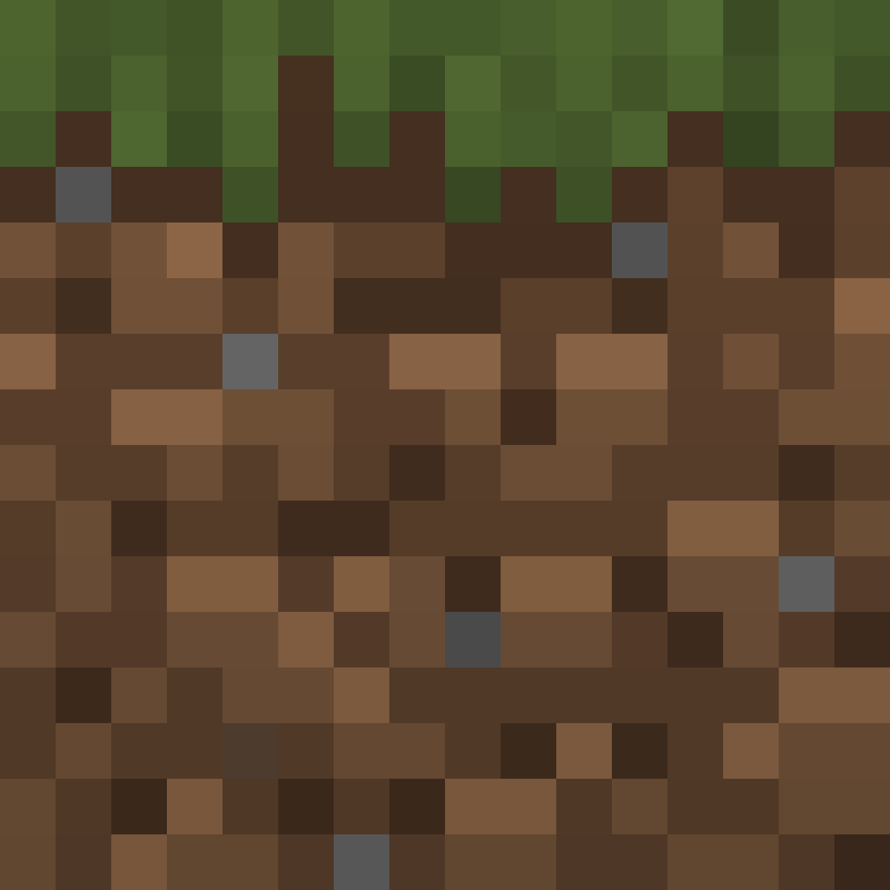

사용자가 인물의 전신 사진을 업로드하면 Gemini 이미지 생성 API를 통해 해당 인물을 묘사한 마인크래프트 스킨(64×64 UV 맵 PNG)을 자동 생성하고, 미리보기·다운로드까지 제공하는 서비스
GitHub 계정으로 로그인하면 댓글이 본인 리포의 GitHub Discussions에 자동 저장됩니다.
![[사진 → 마인크래프트 스킨 변환기] 데모 화면](screenshot.png)
💬 이 프로젝트 어떠세요?
GitHub 계정으로 로그인하면 댓글이 본인 리포의 GitHub Discussions에 자동 저장됩니다.